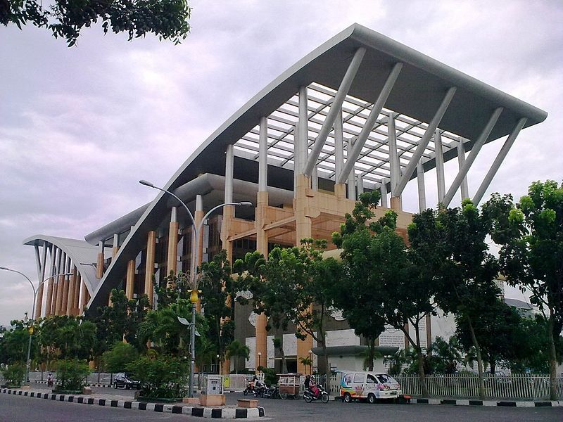
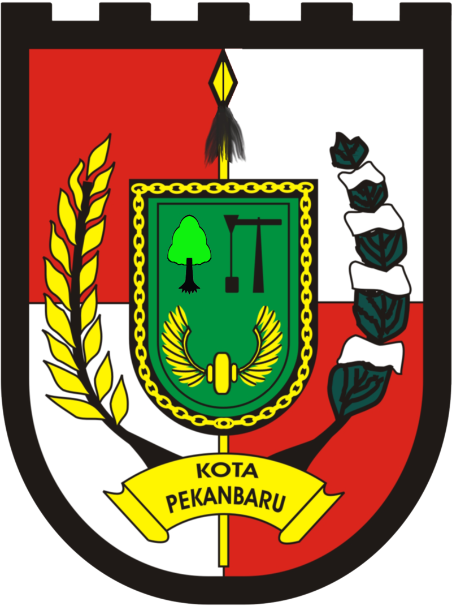

Sejarah

Perkembangan kota ini pada awalnya tidak terlepas dari fungsi Sungai Siak sebagai sarana transportasi dalam mendistribusikan hasil bumi dari pedalaman dan dataran tinggi Minangkabau ke wilayah pesisir Selat Malaka. Pada abad ke-18, wilayah Senapelan di tepi Sungai Siak, menjadi pasar (pekan) bagi para pedagang Minangkabau. Seiring dengan berjalannya waktu, daerah ini berkembang menjadi tempat permukiman yang ramai. Sultan Siak ke-4 Sultan Alamuddin Syah memindahkan pusat kekuasaan Siak dari Mempura ke Senapelan pada tahun 1762. Pada tanggal 23 Juni 1784, berdasarkan musyawarah "Dewan Menteri" dari Kesultanan Siak, yang terdiri dari datuk empat suku (Pesisir, Limapuluh, Tanah Datar, dan Kampar), kawasan ini dinamai dengan Pekanbaru, dan dikemudian hari diperingati sebagai hari jadi kota ini
Demografi
Secara geografis kota Pekanbaru memiliki posisi strategis berada pada jalur Lintas Timur Sumatra, terhubung dengan beberapa kota seperti Medan, Padang dan Jambi, dengan wilayah administratif, diapit oleh Kabupaten Siak pada bagian utara dan timur, sementara bagian barat dan selatan oleh Kabupaten Kampar. Kota ini dibelah oleh Sungai Siak yang mengalir dari barat ke timur dan berada pada ketinggian berkisar antara 5-50 meter di atas permukaan laut. Kota ini termasuk beriklim tropis dengan suhu udara maksimum berkisar antara 34,1 °C hingga 35,6 °C, dan suhu minimum antara 20,2 °C hingga 23,0 °C.Sebelum tahun 1960 Pekanbaru hanyalah kota dengan luas 16 km² yang kemudian bertambah menjadi 62,96 km² dengan 2 kecamatan yaitu kecamatan Senapelan dan kecamatan Limapuluh. Selanjutnya pada tahun 1965 menjadi 6 kecamatan, dan tahun 1987 menjadi 8 kecamatan dengan luas wilayah 446,50 km², setelah Pemerintah daerah Kampar menyetujui untuk menyerahkan sebagian dari wilayahnya untuk keperluan perluasan wilayah Kota Pekanbaru, yang kemudian ditetapkan melalui Peraturan Pemerintah Nomor 19 Tahun 1987.Kemudian pada tahun 2003 jumlah kecamatan pada kota ini dimekarkan menjadi 12 kecamatan.
Wisata
1.Masjid Raya An-nur
Rumah peribadahan
Masjid ini awalnya dibangun pada tahun 1963 dan diresmikan oleh Gubernur Riau, Arifin Achmad, pada tahun 1968. Kemudian pada tahun 2000, masjid ini direnovasi pada masa pemerintahan Gubernur Saleh Djasit, dengan luas tiga kali lipat dari 4 hektar menjadi 12,6 hektar
2. Asia Heritage
Asia Heritage adalah sebuah kawasan wisata yang bertujuan untuk menggambarkan keindahan dan keragaman budaya dari berbagai negara di Asia. Terletak di Jalan Yos Sudarso, kawasan ini memiliki luas lebih dari 4 hektare dan mencakup beragam bangunan, taman, dan fasilitas yang mengangkat nilai-nilai budaya, seni, dan sejarah
pekanbaru
Kota Bertuah
lambang
| negara | : Indonesia |
| Provinsi | : Riau |
| hari jadi | : 23 Juni 1784 |
| luas daerah | : 632,26 km |
| Bahasa | : Melayu |
| populasi | : 1.138.530 jiwa |
| kode pos | : 28111-28299 |